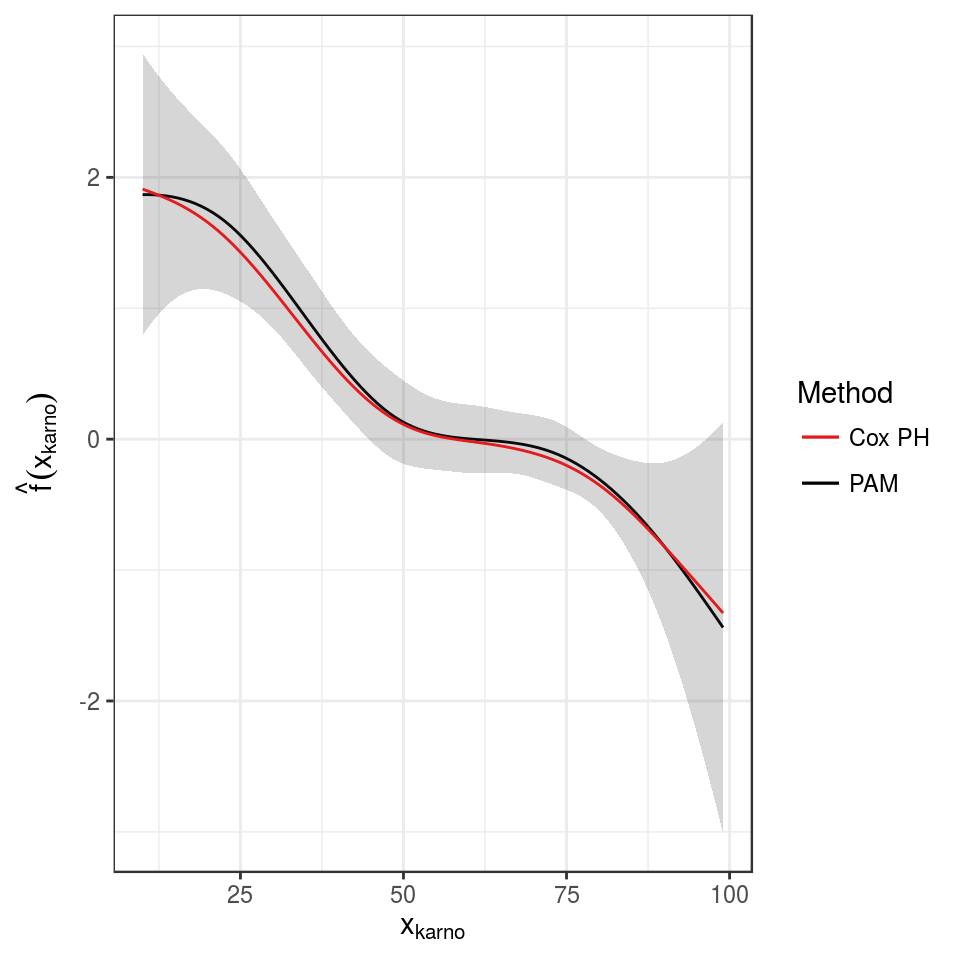
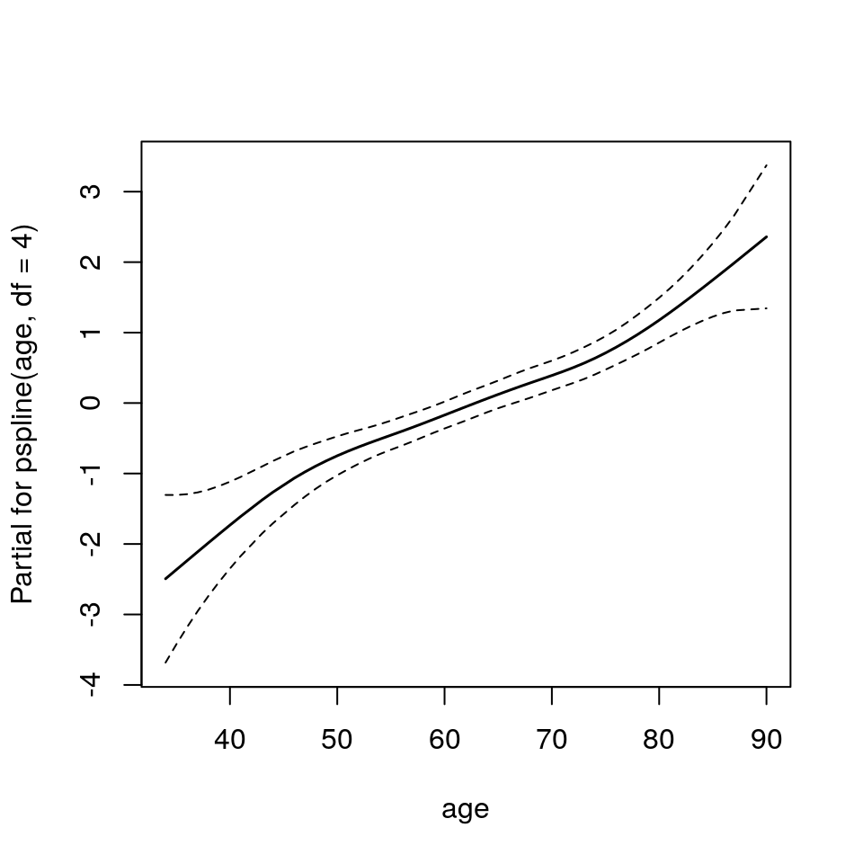
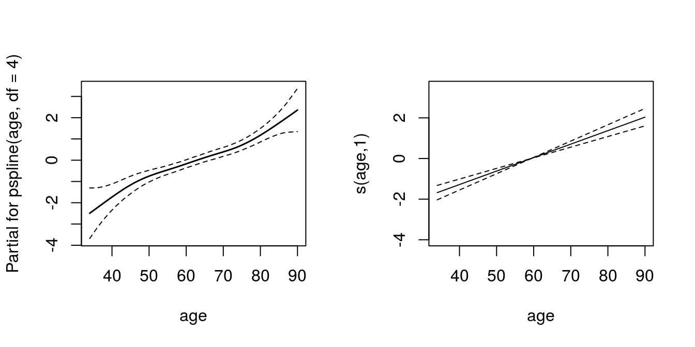
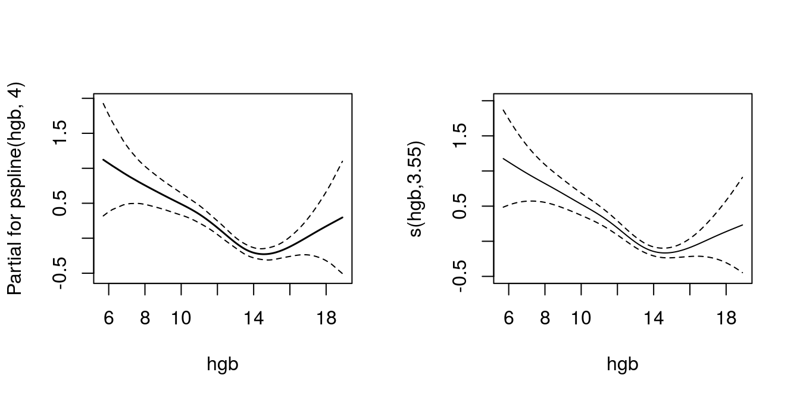
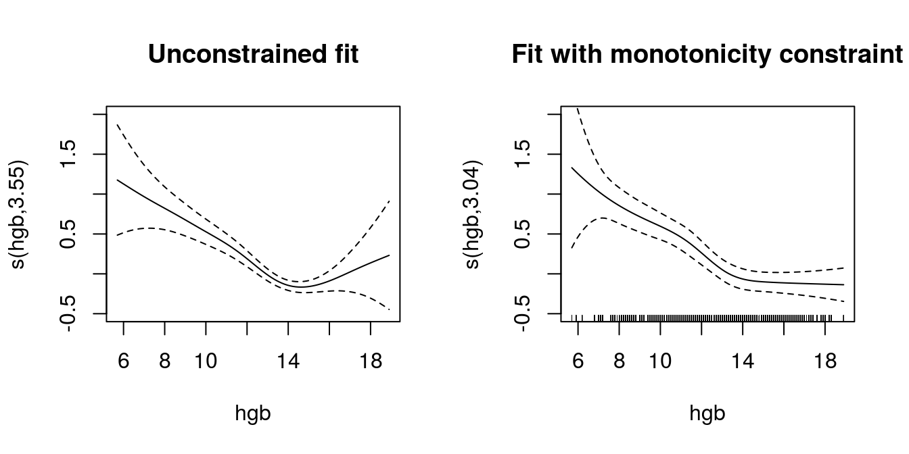

## Warning: replacing previous import 'dplyr::vars' by 'ggplot2::vars' when
## loading 'pammtools'We first illustrate the estimation on non-linear smooth effects using the veteran data from the survival package:
data("veteran", package="survival")
veteran <- veteran %>%
mutate(
trt = 1+(trt == 2),
prior = 1*(prior==10)) %>%
filter(time < 400)
head(veteran)## trt celltype time status karno diagtime age prior
## 1 1 squamous 72 1 60 7 69 0
## 2 1 squamous 228 1 60 3 38 0
## 3 1 squamous 126 1 60 9 63 1
## 4 1 squamous 118 1 70 11 65 1
## 5 1 squamous 10 1 20 5 49 0
## 6 1 squamous 82 1 40 10 69 1There are two continuous covariates in the data set that could potentially exhibit non-linear effects, age and karno. We fit a Cox-PH model and a PAM of the form
\[ \lambda(t|x) = \lambda_0(t)\exp(f(x_{karno})) \]
and
\[ \lambda(t|x) = \exp(f_0(t_j) + f(x_{karno})) \] respectively:
## Cox-PH
cph <- coxph(Surv(time, status) ~ pspline(karno, df=0), data=veteran)
## PAM
ped <- veteran %>% as_ped(Surv(time, status) ~ ., id="id")
pam <- gam(ped_status ~ s(tend) + s(karno, bs="ps"), data=ped, family=poisson(),
offset=offset)The Figure below visualizes the smooth estimates from both models:
Expand here to see R-Code
# crate data set with varying karno values (from min to max in 100 steps)
# and add term contribution of karno from PAM and Cox-PH models
karno_df <- ped %>% make_newdata(karno = seq_range(karno, n = 100)) %>%
add_term(pam, term="karno") %>%
mutate(
cox = predict(cph, newdata=., type="terms")[, "pspline(karno, df = 0)"] -
predict(cph, newdata=data.frame(karno=mean(veteran$karno))))
gg_karno <- ggplot(karno_df, aes(x=karno, ymin=ci_lower, ymax=ci_upper)) +
geom_line(aes(y=fit, col="PAM")) +
geom_ribbon(alpha=0.2) +
geom_line(aes(y=cox, col="Cox PH"))+
scale_colour_manual(name="Method",values=c("Cox PH"=Set1[1],"PAM"=1)) +
xlab(expression(x[plain(karno)])) + ylab(expression(hat(f)(x[plain(karno)])))
# gg_karno
Both methods are in good agreement. The higher the Karnofsky-Score the lower the expected log-hazard. For further evaluation of the Karnofsky-Score effect using time-varying terms of the form \(f(t)\cdot x_{karno}\) and \(f(x_{karno}, t)\) see the time-varying effects vignette.
In the following we consider another example using using data presented in the respective vignette in the survival package (see vignette("splines", package = "survival")).
The example presented in the vignette goes as follows, using the standard base R workflow and termplot for visualization:
data("mgus", package = "survival")
mfit <- coxph(Surv(futime, death) ~ sex + pspline(age, df = 4), data = mgus)
mfit## Call:
## coxph(formula = Surv(futime, death) ~ sex + pspline(age, df = 4),
## data = mgus)
##
## coef se(coef) se2 Chisq DF p
## sexmale 0.22784 0.13883 0.13820 2.69335 1.00 0.10
## pspline(age, df = 4), lin 0.06682 0.00703 0.00703 90.22974 1.00 <2e-16
## pspline(age, df = 4), non 3.44005 3.05 0.34
##
## Iterations: 5 outer, 16 Newton-Raphson
## Theta= 0.851
## Degrees of freedom for terms= 1.0 4.1
## Likelihood ratio test=108 on 5.04 df, p=<2e-16 n= 241
The equivalent fit using PAMs requires the additional step of transforming the data into a suitable format. We then use mgcv::gam to fit the model:
## id tstart tend interval offset ped_status sex age
## 1 1 0 6 (0,6] 1.791759 0 female 78
## 2 1 6 7 (6,7] 0.000000 0 female 78
## 3 1 7 31 (7,31] 3.178054 0 female 78
## 4 1 31 32 (31,32] 0.000000 0 female 78
## 5 1 32 39 (32,39] 1.945910 0 female 78
## 6 1 39 60 (39,60] 3.044522 0 female 78pamfit <- gam(ped_status ~ s(tend) + sex + s(age, bs = "ps"), data = mgus.ped,
method = "REML", family = poisson(), offset = offset)
summary(pamfit)##
## Family: poisson
## Link function: log
##
## Formula:
## ped_status ~ s(tend) + sex + s(age, bs = "ps")
##
## Parametric coefficients:
## Estimate Std. Error z value Pr(>|z|)
## (Intercept) -9.1597 0.1194 -76.685 <2e-16 ***
## sexmale 0.2461 0.1362 1.807 0.0708 .
## ---
## Signif. codes: 0 '***' 0.001 '**' 0.01 '*' 0.05 '.' 0.1 ' ' 1
##
## Approximate significance of smooth terms:
## edf Ref.df Chi.sq p-value
## s(tend) 1.001 1.002 67.11 2.68e-16 ***
## s(age) 1.001 1.002 90.01 < 2e-16 ***
## ---
## Signif. codes: 0 '***' 0.001 '**' 0.01 '*' 0.05 '.' 0.1 ' ' 1
##
## R-sq.(adj) = 0.000299 Deviance explained = 5.19%
## -REML = 1350.2 Scale est. = 1 n = 28326For visualization of the smooth effects we can use the default mgcv::plot.gam function:
layout(matrix(1:2, nrow = 1))
termplot(mfit, term = 2, se = TRUE, col.term = 1, col.se = 1)
plot(pamfit, select = 2, se = TRUE, ylim = c(-4, 3.5))
In this example the PAM approach estimates a linear effect of age, which is consistent with the estimation using coxph, as there is only weak non-linearity.
Another example from the same vignette shows that estimated effects are very similar if the effect of the covariate is in fact strongly non-linear:
fit <- coxph(Surv(futime, death) ~ age + pspline(hgb, 4), mgus2)
mgus2.ped <- mgus2 %>% as_ped(Surv(futime, death)~age + hgb, id = "id")
pamfit2 <- gam(ped_status~s(tend) + age + s(hgb), data = mgus2.ped,
family = poisson(), offset = offset)layout(matrix(1:2, nrow = 1))
termplot(fit, term = 2, se = TRUE, col.term = 1, col.se = 1)
plot(pamfit2, select = 2, se = TRUE, ylim = c(-0.5, 2))
The vignette in the survival package further discusses enforcing monotonicity constraints on the effect of hgb. These can be achieved here more easily using the functionality provided in the scam package (see also Pya and Wood (2015)). The usage is exactly the same as before, replacing the call to gam with a call to scam and specifying bs = "mpd". Note that the fit using constraints takes considerably longer compared to the unconstrained fit.
library(scam)
mpam <- scam(ped_status ~ s(tend) + age + s(hgb, bs = "mpd"), data = mgus2.ped,
family = poisson(), offset = offset)layout(matrix(1:2, nrow = 1))
plot(pamfit2, select = 2, se = TRUE, ylim = c(-0.5, 2), main="Unconstrained fit")
# 1.72 = intercept difference between pamfit2 and mpam
const <- abs(coef(pamfit2)[1] - coef(mpam)[1])
plot(mpam, select = 2, se = TRUE, shift = const,
ylim = c(-0.5-const, 2-const), main="Fit with monotonicity constraint")